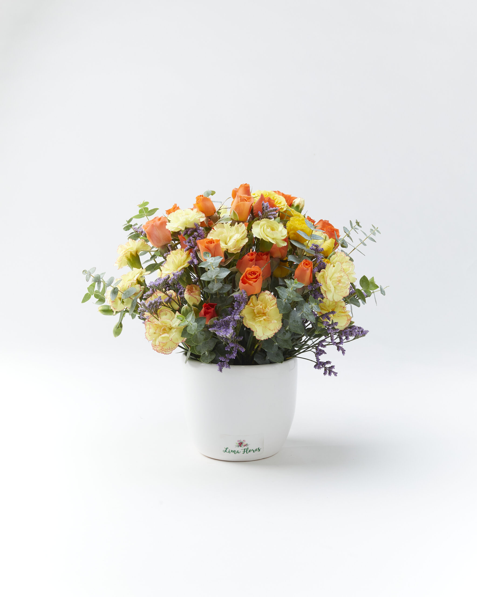

"El ramo llegó armado como si fuera para una portada de revista. Mi mamá lloró cuando lo vio. No se les escapa un solo detalle."
No. 05 · El atelier
Haciendo arte
Haciendo arte
con flores desde 2017.

Miraflores · Hecho a mano
Atelier desde
2017
Lima Flores nació en una cocina pequeña de San Isidro, con tres baldes de agua y dos tijeras buenas. La idea era simple — que comprar flores en Lima debería sentirse como pararse frente a una carretilla florista en una callecita de París o Lisboa.
Hoy somos un atelier que recibe flores frescas los lunes, miércoles y viernes. Lo que ves disponible es lo que tenemos esa semana — si algo se acaba, te avisamos en menos de una hora.
Una flor bien elegida
dice más que un
discurso preparado.